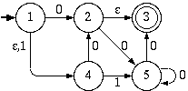

- Minimizing FSM's
Consider the Finite Automaton below. Construct the smallest Deterministic Finite Automaton which accepts the same language. Finally, draw a regular expression that represents the language accepted by your machine and draw a Regular Grammar that generates it.

- Regular or Not?
You must prove that your choice is correct
- The set of strings that have an even number of double zeros in them. (Note that three zeros in a row count as 2 double zeros).
- The set of strings over the alphabet {0} of the form 0n where n is not a prime.
- The set of all strings of the form xwxR where x and w are non-empty strings over the alphabet {0,1}, and the big R over the x means the reverse of x.
- The set of all strings over the alphabet {0} whose length is n! for some n > 0.
- The set of all binary strings that read backwards the same as forwards (pallindromes).
- 1.17 a,b,c in the text
- 1.18 in the text
- 1.23 a,c in the text
- 1.37 in the text
- Decision Algorithms
Give decision algorithms to determine if a Regular set
- Contains all strings of the form 0*1*.
- Is co-finite. (its complement is finite).
- 4.14 in the text
- Regular Grammars
- Write down a regular (also called left-linear) grammar to generate the set of strings that are evenly divisible by 5 when interpreted as a binary string.
- A right-linear grammar is a context-free grammar where each production must be either in the form A->Ba, or A->b, where a and b are terminal symbols and A and B are non-terminals. (The regular grammars we did in class are called left-linear). Right-linear grammars are also equivalent to finite state machines. Explain how to convert a given finite state machine, to an equivalent right-linear grammar. You may use an example to illustrate.
- Single Symbol Regular Languages
- Prove that every language of the form 0mx+b, where m and b are positive integer constants and x ranges from 0 to infinite, is regular.
- Describe a regular set over the alphabet {0} that is NOT of the form from part (a).
- Extra Credit: Characterize all regular sets over the alphabet {0}, and prove your answer. That is, prove that every regular set over the alphabet {0} is of some particular form.
- Triple Extra Credit: Minimizing FSM’s
Describe a method to implement the FSM minimization algorithm that runs in O(n log n) time, rather than O(n2). Write a program implementing your method.